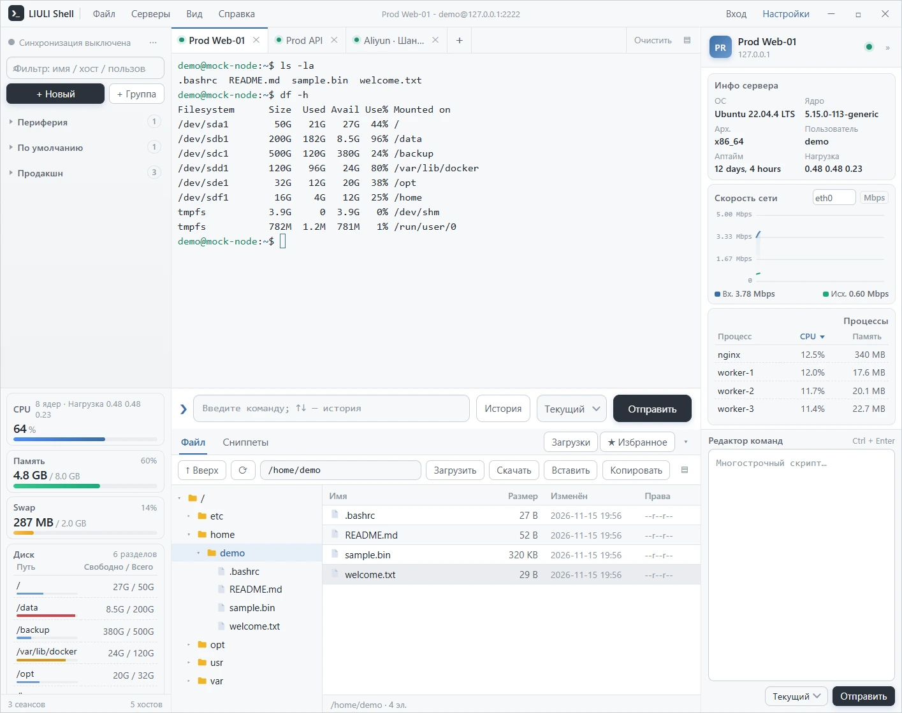
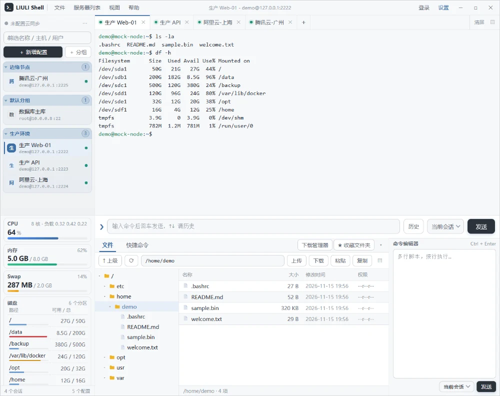

▤
Управление серверами
Серверы упорядочиваются по группам, поддерживаются множественный выбор, перетаскивание и копирование настроек; удалённые подключения попадают в корзину на 30 дней и восстанавливаются в любой момент.
LIULI Shell — кроссплатформенный SSH-клиент.
Он объединяет управление подключениями, интерактивный терминал, передачу файлов по SFTP, мониторинг состояния и синхронизацию настроек в одном приложении — для разработчиков и администраторов, которые обслуживают несколько серверов.

Для Windows 10 / 11 доступны установщик и портативная версия; Linux и macOS собираются из исходников. Возможности у установщика и портативной версии одинаковы.
Установщик содержит мастер установки и создаёт ярлыки; портативная версия работает сразу после распаковки — подходит для флешки или временной среды.
Открыть 夸克网盘 ↗Подходит для сетей за пределами Китая; файлы релизов обновляются вместе с коммитами репозитория.
Перейти к GitHub Releases ↗Подходит для сетей Китая; есть портативные сборки, репозиторий синхронизирован с релизами.
Перейти к Gitee Releases ↗Установите зависимости и соберите пакет на целевой системе: поддерживаются deb, AppImage, tar.gz, а также dmg и zip для macOS.
%APPDATA%\LIULI Shell, обновление или переустановка их не удаляют. При смене компьютера используйте облачную синхронизацию или экспортируйте файл настроек в настройках.
Для Linux и macOS пакет нужно собирать на этой же машине. Выполняйте команды по одной, не вставляйте блок целиком. Скрипт определит дистрибутив, установит зависимости и спросит тип пакета.
Сначала выберите источник (Gitee или GitHub, только один), затем перейдите в каталог и запустите скрипт сборки.
Gitee по умолчанию клонирует в liuli-shell, GitHub — в Liulishell; ниже всё клонируется в liuli-shell, поэтому дальнейшие команды не меняются.
Требуется Git.Шаг 0 устанавливает Git; шаг 1 оставляет только один источник; шаг 2 запускает скрипт сборки. Запускайте сборку только после завершения клонирования.
# 0) Нужен Git; если установлен — пропускается (в других дистрибутивах замените на dnf / pacman) command -v git >/dev/null || sudo apt-get update && sudo apt-get install -y git # 1) Удалите старые каталоги, затем клонируйте источник (Gitee / GitHub — один) # Gitee (рекомендуется в Китае, каталог по умолчанию liuli-shell) rm -rf liuli-shell Liulishell && git clone https://gitee.com/liuliwanjiaweb/liuli-shell.git liuli-shell # GitHub (рекомендуется за рубежом; каталог по умолчанию Liulishell, здесь явно указан liuli-shell) rm -rf liuli-shell Liulishell && git clone https://github.com/LIULIWANJIA/Liulishell.git liuli-shell # 2) Перейдите в проект и соберите: определение дистрибутива → системные зависимости → выбор deb / AppImage → упаковка → предложение установки cd liuli-shell && bash scripts/build-linux.sh
Результат в dist/. Скрипт предложит выбрать 1 = deb / 2 = AppImage / 3 = оба; чтобы собрать только .tar.gz используйте bash scripts/build-linux.sh tar. Скрипт автоматически обрабатывает в Ubuntu 24.04+ переименование пакетов *t64 с откатом назад. В неинтерактивных средах вроде CI автоустановки нет — установите пакет вручную. При проблемах со средой запустите bash scripts/build-linux.sh check для диагностики; при медленной загрузке Electron скрипт сам переключает зеркало.
# 3) Если зависимости не установились или сборка выдала ошибку, попробуйте по порядку
bash scripts/build-linux.sh repair
bash scripts/build-linux.sh deps
bash scripts/build-linux.sh
Уже установленные компоненты пропускаются.При установке Homebrew потребуется пароль текущего пользователя. После клонирования установите зависимости и соберите пакет; для Intel и Apple Silicon выбирайте по необходимости.
# Базовые инструменты (если установлены — пропускаются; xcode-select откроет окно, дождитесь завершения) xcode-select --install 2>/dev/null || true command -v brew >/dev/null || /bin/bash -c "$(curl -fsSL https://raw.githubusercontent.com/Homebrew/install/HEAD/install.sh)" # Добавить Homebrew в PATH текущего терминала после установки (для Intel — /usr/local/bin/brew) if [ -x /opt/homebrew/bin/brew ]; then eval "$(/opt/homebrew/bin/brew shellenv)"; elif [ -x /usr/local/bin/brew ]; then eval "$(/usr/local/bin/brew shellenv)"; fi # Нужен Node ≥ 18; если нет или версия старая — установите 20, затем проверьте node -v 2>/dev/null | grep -qE '^v(1[89]|[2-9][0-9])' || brew install node@20 brew link --overwrite --force node@20 >/dev/null 2>&1 || true node -v && npm -v # Удалите старые каталоги, затем клонируйте источник (Gitee / GitHub — один) rm -rf liuli-shell Liulishell # Gitee (рекомендуется в Китае, каталог по умолчанию liuli-shell) git clone https://gitee.com/liuliwanjiaweb/liuli-shell.git liuli-shell # GitHub (рекомендуется за рубежом; каталог по умолчанию Liulishell, здесь явно указан liuli-shell) git clone https://github.com/LIULIWANJIA/Liulishell.git liuli-shell
cd liuli-shell npm ci || npm install # при ошибке автоматический откат на npm install npm run vendor # При медленной загрузке Electron в Китае сначала раскомментируйте две строки ниже (необязательно) # export ELECTRON_MIRROR=https://registry.npmmirror.com/-/binary/electron/ # export ELECTRON_BUILDER_BINARIES_MIRROR=https://registry.npmmirror.com/-/binary/electron-builder-binaries/ npm run dist:mac # x64 + arm64 вместе npx electron-builder --mac dmg zip --arm64 # только Apple Silicon
Результат в dist/(.dmg / .zip).npm run vendor копирует ресурсы xterm в src/renderer/vendor, это обязательно перед упаковкой; сборки Intel и Apple Silicon несовместимы. Если Gatekeeper блокирует неподписанное приложение, выберите «Открыть» в контекстном меню.
В сетях Китая рекомендуется Gitee; при медленной загрузке Electron задайте переменные зеркала.
Поддерживается импорт JSON-файлов, экспортированных FinalShell, или всего каталога настроек. При импорте читаются данные подключений, восстанавливается иерархия групп и перед записью показывается сводка.
Перетащите файлы сюда; можно выбрать несколько JSON или весь каталог настроек.
Папки создают группы по иерархии (до трёх уровней); JSON из папок глубже третьего уровня попадают в соответствующую группу первого уровня независимо от целевой группы.
Вопросы по использованию, предложения и новости версий публикуются в группах. Присоединяйтесь к удобной платформе.
Пользователи из Китая могут сообщать о проблемах и делиться настройками и опытом в группе QQ.
Пользователи из других стран получают те же уведомления и обсуждения в группе Telegram.
От подключения к серверам и передачи файлов до контроля состояния и переноса настроек — основные действия выполняются в клиенте. Ниже описано, что умеет каждый раздел.
Серверы упорядочиваются по группам, поддерживаются множественный выбор, перетаскивание и копирование настроек; удалённые подключения попадают в корзину на 30 дней и восстанавливаются в любой момент.
Каждая вкладка — отдельный SSH-сеанс с историей команд, быстрым вводом, переподключением и перетаскиванием вкладок; подключения через прокси отмечены статусом.
Дерево каталогов SFTP синхронизировано со списком файлов и следует за сменой каталога в терминале; есть загрузка, скачивание, смена прав и встроенный текстовый редактор.
Постоянно собираются данные CPU, памяти, Swap, дисков, сетевых интерфейсов и процессов; масштаб графиков подстраивается, аномальная нагрузка видна сразу.
Задачи скачивания собраны в отдельном окне: их можно приостанавливать, отменять и очищать; прогресс, скорость и статус видны в реальном времени.
Поддерживаются официальный облачный сервис и свой WebDAV: зашифрованная синхронизация серверов, групп и избранного с двусторонним слиянием на нескольких устройствах; возможны ручная синхронизация и резервное копирование.
Читаются JSON-резервные копии FinalShell или весь каталог настроек, группы восстанавливаются по исходной иерархии; перед импортом показывается предварительный просмотр, дубликаты пропускаются.
Восемь светлых и тёмных тем; шрифты, размер, масштаб интерфейса, поведение мыши и горячие клавиши настраиваются и сохраняются автоматически.
HTTP / SOCKS5 прокси для отдельного подключения или глобально, с прокси по умолчанию и прямым подключением как резервом — для внутренних и ограниченных сетей.
Часто используемые команды упорядочены по разделам, чтобы не вводить длинные строки в терминале; при необходимости их можно изменить в редакторе команд.
Разделы «Частые», «Docker», «Сеть» и другие управляются отдельно; кнопки показывают только названия, интерфейс остаётся чистым; разделы и команды можно перетаскивать.
После подключения состояние собирается автоматически; аномальную нагрузку видно в клиенте, а затем решается, нужно ли открывать терминал.
Слева обзор ресурсов, справа скорость сети и нагрузка процессов; интервал обновления и единицы скорости настраиваются.
Учётные данные, резервные копии настроек и восстановление удалённого выполняются в клиенте — меньше зависимости от сторонних сервисов и ручных действий.
Учётные данные хранятся только в зашифрованном виде и не показываются открытым текстом; перед записью настроек создаётся копия, удалённые серверы и группы попадают в корзину.
Ширину колонок можно менять перетаскиванием или скрывать их; сверху вкладки сеансов и управление окном, внизу строка состояния с числом подключений.



Интерфейс клиента и этот сайт доступны на упрощённом и традиционном китайском, английском, русском, французском, немецком, японском и корейском. При смене языка меняются адрес страницы и разметка hreflang, каждая версия содержит одинаковые функции и скриншоты.
Настройки сгруппированы по назначению, изменения применяются сразу и сохраняются автоматически. Ниже шесть самых частых групп.
Шесть светлых и две тёмные; интерфейс, фон терминала и палитра ANSI меняются вместе.
Разверните полный справочник, если нужен ручной контроль сборки, зависимости для разных дистрибутивов или поиск ошибок упаковки.
Имена системных библиотек различаются по дистрибутивам, начиная с Ubuntu 24.04 используется *t64. Три варианта различаются: AppImage не требует установки, deb устанавливается пакетным менеджером, tar.gz работает после распаковки без FUSE.
scripts/build-linux.sh сам определяет дистрибутив и обрабатывает откат имён t64.bash scripts/build-linux.sh одна команда выполняет «определение дистрибутива → системные зависимости → выбор типа пакета → упаковка → предложение установки», поддержаны apt / dnf / pacman. Только зависимости — ... deps, только диагностика — ... check, сломанная среда — ... repair. При установке: deb использует apt install и создаёт значки, AppImage копируется в ~/Applications/LIULI-Shell и получает пункт меню и значок на рабочем столе.chmod +x dist/LIULI-Shell-*-x86_64.AppImage ./dist/LIULI-Shell-*-x86_64.AppImage # Установка deb в Debian / Ubuntu sudo apt install ./dist/LIULI-Shell-*_amd64.deb # Распаковать и запустить (FUSE не нужен, системные каталоги не затрагиваются) mkdir -p ~/Applications tar -xzf dist/LIULI-Shell-*-x86_64.tar.gz -C ~/Applications ~/Applications/LIULI-Shell-*/liulishell
AppImage использует runtime type-2 и требует FUSE 2. До Ubuntu 22.04 он есть по умолчанию, в 24.04 / 26.04 устанавливается вручную; без FUSE можно распаковать и запустить.
# Ubuntu 24.04 / 26.04 sudo apt install -y libfuse2t64 # Ubuntu 20.04 / 22.04, Debian 12 sudo apt install -y libfuse2 # Запуск без FUSE (стартует чуть медленнее, функциональность та же) ./LIULI-Shell-*-x86_64.AppImage --appimage-extract-and-run # Или просто вариант tar.gz, он не требует FUSE
# 1) Поместить в постоянное место mkdir -p ~/Applications cp dist/LIULI-Shell-*-x86_64.AppImage ~/Applications/LIULI-Shell.AppImage chmod +x ~/Applications/LIULI-Shell.AppImage # 2) Извлечь значки (--appimage-extract создаст squashfs-root в текущем каталоге) cd /tmp && ~/Applications/LIULI-Shell.AppImage --appimage-extract '*.png' >/dev/null 2>&1 mkdir -p ~/.local/share/icons/hicolor/512x512/apps cp /tmp/squashfs-root/*.png ~/.local/share/icons/hicolor/512x512/apps/liulishell.png 2>/dev/null \ || cp /tmp/squashfs-root/liulishell.png ~/.local/share/icons/hicolor/512x512/apps/ 2>/dev/null # 3) Создать ярлык приложения ($HOME развернётся в домашний каталог) mkdir -p ~/.local/share/applications cat > ~/.local/share/applications/LiuliShell.desktop <<EOF [Desktop Entry] Type=Application Name=LIULI Shell Comment=Кроссплатформенный SSH-терминал и менеджер серверов Exec=$HOME/Applications/LIULI-Shell.AppImage %U Icon=liulishell Terminal=false Categories=Development;System;Network; StartupWMClass=LiuliShell EOF chmod +x ~/.local/share/applications/LiuliShell.desktop update-desktop-database ~/.local/share/applications 2>/dev/null || true # 4) Для значка на рабочем столе скопируйте ярлык и отметьте его доверенным cp ~/.local/share/applications/LiuliShell.desktop ~/Desktop/ gio set ~/Desktop/LiuliShell.desktop metadata::trusted true 2>/dev/null || true # В локализованных системах каталог рабочего стола может называться иначе, замените при необходимости
Пользователям .deb эти шаги не нужны: при установке deb автоматически создаёт /usr/share/applications, приложение сразу видно в меню.
Требования:macOS 12+ (Intel или Apple Silicon), Xcode Command Line Tools, Homebrew, Git, Node.js 20/22 LTS. dmg нельзясобрать на Windows / Linux.
1. Базовые инструменты(xcode-select откроет окно, дождитесь завершения установки)
xcode-select --install /bin/bash -c "$(curl -fsSL \ https://raw.githubusercontent.com/Homebrew/install/HEAD/install.sh)" # Apple Silicon: добавить brew в PATH (для Intel — /usr/local/bin/brew; повторный запуск не дублирует строку) grep -qsF 'brew shellenv' ~/.zshrc || echo 'eval "$(/opt/homebrew/bin/brew shellenv)"' >> ~/.zshrc source ~/.zshrc
2. Node 20 и Git
brew install node@20 git brew link --overwrite --force node@20 node -v && npm -v # ожидается v20.x
3. Исходники и зависимости(сначала удалите старые каталоги, чтобы не осталось лишних файлов; Gitee / GitHub — один. По умолчанию Gitee использует каталог liuli-shell, GitHub — Liulishell, здесь всё явно клонируется в liuli-shell)
rm -rf liuli-shell Liulishell # Gitee (рекомендуется в Китае) git clone https://gitee.com/liuliwanjiaweb/liuli-shell.git liuli-shell # GitHub (рекомендуется за рубежом; раскомментируйте следующую строку и закомментируйте Gitee) # git clone https://github.com/LIULIWANJIA/Liulishell.git liuli-shell cd liuli-shell npm ci || npm install # если lockfile не совпадает с платформой, будет откат на npm install npm run vendor # копирует ресурсы xterm в src/renderer/vendor, обязательно перед упаковкой
4. Упаковка(быстрее всего только текущая архитектура; если нужны обе, укажите dist:mac)
npm run dist:mac # x64 + arm64 вместе npx electron-builder --mac dmg zip --arm64 # только Apple Silicon npx electron-builder --mac dmg zip --x64 # только Intel
5. Результат и кэш:Результат в ~/liuli-shell/dist/(*.dmg,*.zip); кэш загрузок Electron и инструментов упаковки находится в ~/Library/Caches/electron/и~/Library/Caches/electron-builder/, удаление заставит скачать заново.
6. Установка без подписи:Если после перетаскивания в «Программы» Gatekeeper блокирует приложение, выберите «Открыть» в контекстном меню или выполните:
xattr -dr com.apple.quarantine "/Applications/LIULI Shell.app" spctl --assess --type execute -vv "/Applications/LIULI Shell.app" # узнать причину блокировки
Для внешнего распространения нужен сертификат Apple Developer ID и нотаризация: настройте CSC_LINK(путь к .p12 или base64),CSC_KEY_PASSWORD; для нотаризации также нужны APPLE_ID,APPLE_APP_SPECIFIC_PASSWORD,APPLE_TEAM_ID, electron-builder выполнит подпись и нотаризацию автоматически.
npx electron-builder --mac dmg --universal(размер примерно вдвое больше, сборка заметно медленнее).| Ошибка / симптом | Причина и решение |
|---|---|
| Не удаётся найти пакет libasound2 | Начиная с Ubuntu 24.04 / Debian 13 системные библиотеки переименованы *t64(например, libasound2t64,libgtk-3-0t64). Сначала установите по старому имени, при ошибке — автоматический откат:bash scripts/build-linux.sh deps уже содержит эту логику. |
| dlopen(): error loading libfuse.so.2 | AppImage при запуске требует FUSE 2: в 24.04+ установите libfuse2t64, в 22.04 и раньше — libfuse2; без FUSE можно --appimage-extract-and-run, либо перейдите на .tar.gz. |
| Загрузка Electron прерывается по таймауту / зависает на downloading | Задайте зеркало и повторите:export ELECTRON_MIRROR=https://registry.npmmirror.com/-/binary/electron/,export ELECTRON_BUILDER_BINARIES_MIRROR=https://registry.npmmirror.com/-/binary/electron-builder-binaries/. |
| npm ci не удаётся / lockfile не совпадает с платформой | Удалите node_modules и используйте npm install; со старым Node (< 18) установка не пройдёт, используйте Node 20. |
| rpmbuild not found | Нужно только при сборке rpm: в Fedora установите rpm-build, в Debian/Ubuntu — rpm и rpm2cpio связанные пакеты, либо пропустите цель rpm. |
| Permission denied (запуск AppImage) | Нет прав на выполнение:chmod +x dist/LIULI-Shell-*-x86_64.AppImage. |
| errSecInternalComponent / ошибка подписи (macOS) | связка ключей заблокирована:security unlock-keychain -p <пароль> ~/Library/Keychains/login.keychain-db , затем запустите снова; в CI также security set-key-partition-list. |
dist/. В Linux — LIULI-Shell-*-x86_64 / *-arm64 файлы .AppImage / .deb / .tar.gz (скрипт сам определяет архитектуру), в macOS — .dmg / .zip.npm run vendor копирует xterm.js и другие ресурсы интерфейса в src/renderer/vendor/; без этого шага терминал в собранном пакете будет пустым.ubuntu-22.04,macos-14 runner).dist/ установочные и портативные пакеты нужной платформы как файлы Release (Windows *.blockmap нужен только для дельта-обновлений, загружать его не нужно); в репозиторий не коммитьте node_modules/ и dist/.